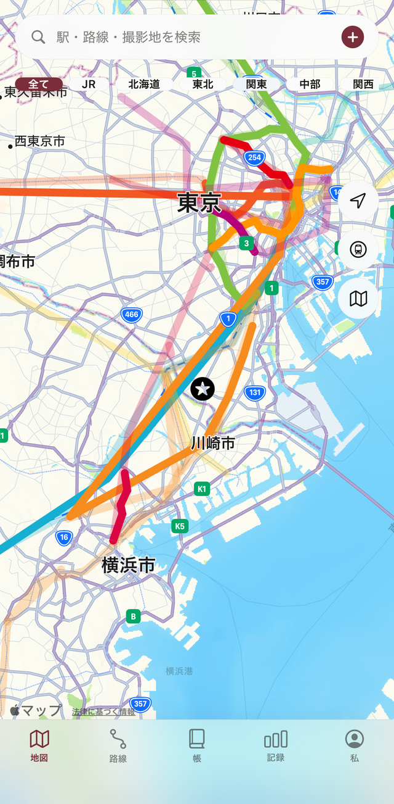
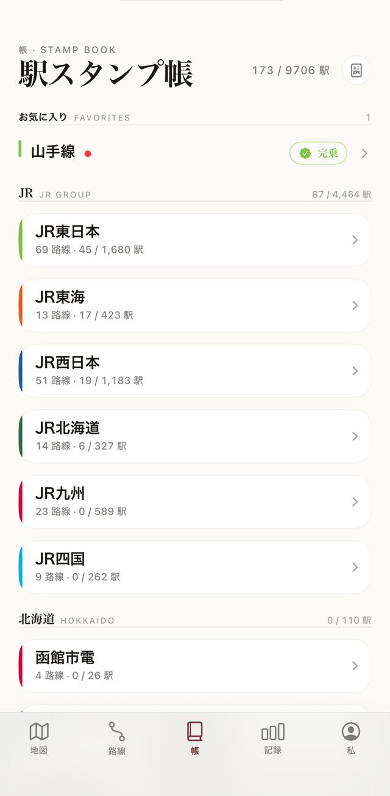
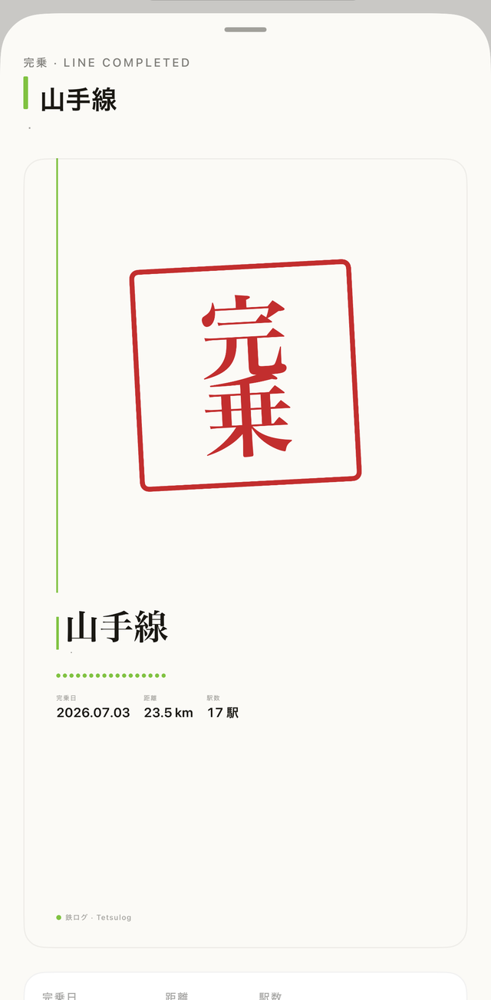

只要点一下地图上的车站，就能记录这趟乘车。搭过的路线颜色会直接在地图上蔓延。把日本之旅搭过的路线，以全日本163家公司・571条路线・9,706个车站的规模，像集章帐一样记录在 Tetsulog 里。
只要点地图上的车站即可。乘车日期与区间都由 Tetsulog 记下。
搭过的路线颜色会在地图上蔓延。未乘坐的区间保持灰色，搭过多少一目了然。
完乘一条路线，就会盖下朱红色的「完乘」印章。帐簿的页面一点一点被填满。
JR 集团、大型私铁、地方私铁、第三部门铁道的路线数据全部内置。不论是山手线一圈，还是全日本完乘，Tetsulog 都会替你记下来。



以前搭过的记录也能事后补登。就算今天才开始，过去的完乘记录一样有效。
只要选择起点与终点，区间内的车站就能一次全部标记为已乘坐。
完乘一条路线，就会自动生成朱印风的纪念卡，也能直接分享到社区。
以地图深浅呈现各都道府县的乘车率，旅行的足迹用颜色一看就懂。
可将集章帐导出成 PDF，打印或留存都方便。
通过 iCloud 同步，随时可导出 JSON 备份与 CSV。换机或搬到其他工具，记录都是你的。免费。
点一下车站就能记录乘车。搭过的路线颜色会在地图上蔓延，完乘时盖下朱红印章。收录全日本163家公司、571条路线、9,706个车站的铁道乘车记录 App。